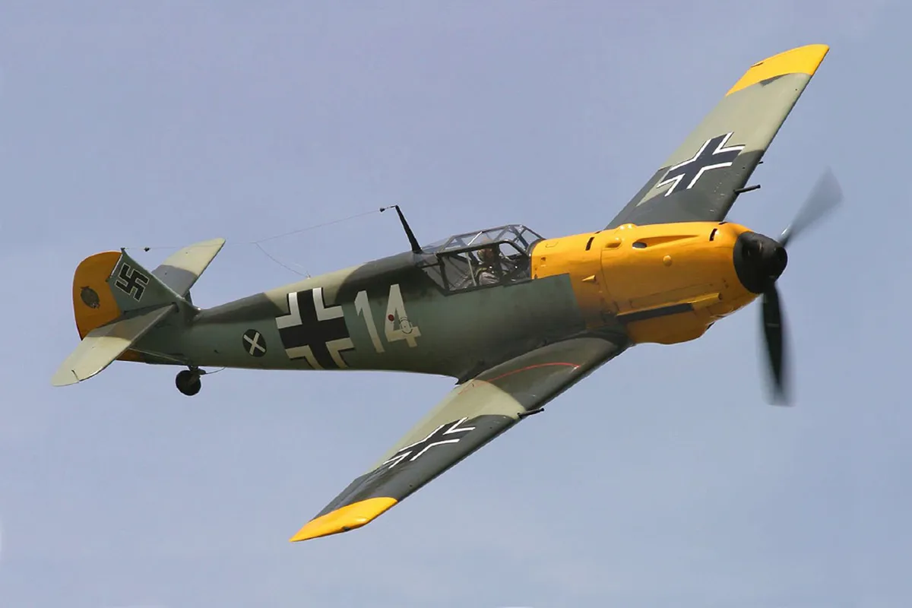

o 182 Skyline é o segundo avião mais popular da fabricante norte-americana ainda em produção, depois do 172 Skyhawk.

Messerschmitt
Principal aeronave de caça da Alemanha durante a Segunda Guerra Mundial
Piper Cherokee
Lançado pela tradicional Piper Aircraft dos Estados Unidos em 1961 e produzido até hoje, o PA-28 Cherokee é um avião muito comum em pequenos aeródromos e escolas de aviação.